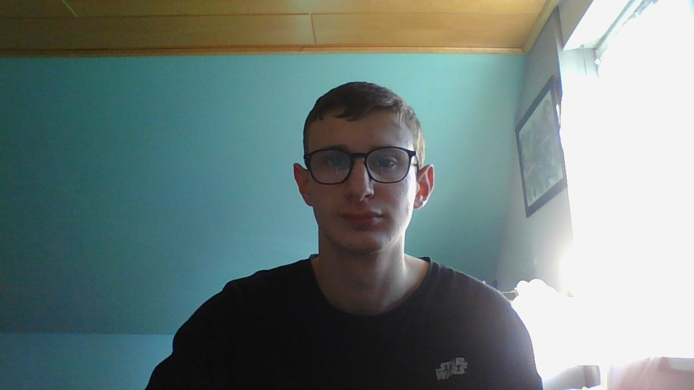

plus a propos de moi :
bonjour je m'appelle Julien Weber. L'un de mes plus grand centre d'intêret
est les jeux-vidéo car depuis tout petit, j'ai toujours joué aux jeux-vidéo et j'étais
curieux de savoir comment avec du binaire c'est a dire juste des 0 et des 1, on pouvait faire un
jeux-vidéo avec des textures, des IA, des items etc... .Un autre de mes centre d'intêret et le VTT car
ça me permet de me relaxer lorsque je pars en balade en forêt car tout est très calme, on n'entend juste le bruit des animaux et on profite du
paysage. J'ai passé mon BAC STI2D puis j'ai rejoint la formation RT (réseaux et télécoms)